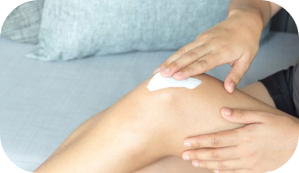

- - Вам нужна операция по замене сустава!
- - Доктор, а без операции никак?
- - В вашем случае без операции, вы не сможете передвигаться.
Отрывок из диалога с пациентами, которые поздно обратились за помощью, долгие годы закрывали глаза на проблему с опорно-двигательным аппаратом. Дорогостоящая операция не гарантирует благополучный исход, скажет каждый практикующий хирург. Всего 10% решаются на радикальные меры, 5% не допускают к операции из-за пожилого возраста и серьезных сопутствующих заболеваний. Остальные 85% продолжают мучиться от болей и становятся заложниками собственного тела. Чтобы не войти в плачевную статистику, не стоит закрывать глаза на симптомы.
Казалось, старая травма может периодически давать о себе знать, на самом деле в суставе хронический синовит, вовремя нелеченый недуг в старости приводит к хромоте. Подумаешь артрит, неприятная болячка, пока сильно не беспокоит. В вас дремлет тихий убийца, который в конечном итоге приведет к деформации, в худшем к разрушению сустава.
Болезненность, скованность, отек, тупые, ноющие боли?
Распознай сигналы тела правильно!
01
Артриты
Болезненность, отечность, утренняя скованность и
ощущение жара в суставах. Может сопровождаться утомляемостью, лихорадкой и общим
недомоганием.
Итог: Поражение хрящевой ткани, образование шипов
на краях костей.
02
Остеоартроз
Разновидность артроза дает болезненность, скованность,
ограничение движения, стартовые боли по утрам, ощущения каменных конечностей.
Итог: Необратимые дегенеративные изменения всего
позвоночного столба, полный износ сустава.
03
Посттравматический синовит
Боль при движении, периодически наблюдается опухание,
вызванное скоплением жидкости в синовиальной оболочке.
Итог: Накопление воспалительной жидкости, которая
способствует деформации сустава. Спусковой крючок к развитию артрита.
04
Бурсит
Острая боль усиливается при движении, опухание,
вызванное воспалением слизистой сумки, покраснение кожи вокруг сустава.
Итог: Хроническая боль, развитие инфекции внутри
сустава, абсцесс, изменение структуры сустава.
05
Радикулит
Относится к невралгии, острая, резкая или тупая боль,
которая распространяется по нерву вдоль его пути.
Покалывание, шипение или
онемение вдоль пораженного нерва.
Итог: Распространение болей на большую площадь,
потеря чувствительности конечностями, полная или частичная потеря движения.
06
Остеохондроз
Головокружение, головная боль, ноющие, тянущие боли в
месте поврежденного диска, ограничение движения.
Итог: Протрузия диска. Передавливание артерий,
нарушает кровоснабжение, перенос кислорода в головной мозг, создаются предпосылки к
развитию ишемического инсульта.
Как остановить разрушительные процессы?
Нестероидные противовоспалительные средства (НПВС)
Широко используются для снятия боли и воспаления при заболеваниях суставов. Обладают несколькими полезными свойствами: противовоспалительным, обезболивающим и жаропонижающим действием. Однако, НПВС не лечат костные недуги, а лишь облегчают симптомы боли. Не лечат, а помогают переносить симптомы болезни более менее сносно. Благоприятного воздействия на костные ткани не оказывает, в больших дозировках наносит ущерб стенкам желудка и печени из-за высокой токсичности.
Внутрисуставные инъекции (уколы в сустав)
Прокол (пункция) полости сустава и введение через инъекционную иглу гиалуроновую кислоту в полость сустава. Инъекции помогают восстановить подвижность сустава и снизить боль при движении. Вводимый препарат схож по составу с синовиальной жидкостью и выполняет роль суставной смазки. Процедура предотвращает разрушение сустава и способна временно заменить операцию по установке суставного эндопротеза. Есть весомое, но, стоимость одной ампулы от 13 тысяч рублей и выше, в зависимости от чистоты гиалурона. Чем лучше препарат, тем выше цена. Полноценный курс инъекций превышает 65 тысяч рублей, лечебный эффект рассчитан на полгода и требует постоянного повторения.
Крем Joint Pro
Современный аналог внутрисуставных инъекций, крем имеет высокомолекулярную формулу, проникает глубоко в суставную ткань.
Чем больше масса молекулы, тем больше веществ сохраняется во внутрисуставном пространстве и тем лучше выражен клинический эффект.
Весомое отличие крема Joint Pro от внутрисуставных инъекций в продолжительности действия. Joint Pro требует курсового использования, имеет накопительный эффект, который сохраняется до 1 года после завершения курса. Что делает крем не только эффективным, но и доступным каждому по приемлемой цене.
В составе крема Joint Pro растительные экстракты, природные биостимуляторы, витамины и хондроитин, в синергии друг с другом:
- Устраняют болевой синдром и очаг воспаления
- Останавливают дегенеративные изменения
- Способствуют восстановлению хрящевой ткани
Современный аналог внутрисуставных инъекций, крем имеет высокомолекулярную формулу, проникает глубоко в суставную ткань. Чем больше масса молекулы, тем больше веществ сохраняется во внутрисуставном пространстве и тем лучше выражен клинический эффект. Весомое отличие крема Joint Pro от внутрисуставных инъекций в продолжительности действия. Joint Pro требует курсового использования, имеет накопительный эффект, который сохраняется до 1 года после завершения курса. Что делает крем не только эффективным, но и доступным каждому по приемлемой цене. В составе крема Joint Pro растительные экстракты, природные биостимуляторы, витамины и хондроитин, в синергии друг с другом: Устраняют болевой синдром и очаг воспаления Останавливают дегенеративные изменения Способствуют восстановлению хрящевой ткани
Натуральная рецептура для сильных суставов

Сабельник
Способствует восстановлению функций суставов, оказывает противовоспалительное действие у больных с ревматоидными и реактивными артритами, помогает снятию болевого синдрома, мышечного напряжения и отечности суставов. Поддерживает структуру хрящевой ткани, не давая ей разрушаться.
Хондроитина сульфат
Улучшает в хрящевой ткани фосфорно-кальциевый обмен, замедляет процессы ее дегенерации, ингибирует ферменты, которые нарушают функции и структуру суставного хряща. Повышает выработку жидкости внутри сустава, улучая его подвижность.
Прополис
Сильнейший антиоксидант, выводит продукты распада воспаления, ускоряет заживление околосуставных тканей. Действует как миорелаксант и природный антисептик.
Метилникотинат
Расширяет капилляры, увеличивая циркуляцию крови для лучшей доставки веществ к хрящевой ткани.
Эфирное масло пихты сибирской
Оказывает болеутоляющее, противовоспалительное, антисептическое воздействие, успокаивает мышечные, ревматические и артритные боли за счет согревающего эффекта. Входит в составы многих препаратов от артритов, невритов, невралгии и остеохондроза.
Глюкозамина сульфат
Восстанавливает хрящевые ткани и связки, накапливаясь, восполняет дефицит вещества в организме. Восстанавливает ферментативные процессы в клетках синовиальной мембраны и суставного хряща. Нормализует отложение кальция, тормозит развитие дегенеративных изменений.
Золотой ус
Биогенный стимулятор, который усиливает действие всех веществ входящих в состав.
Диметилсульфоксид
Проводник хондроитина к тканям, вспомогательный компонент состава, улучшающий трофику тканей и проводимость.
Мнение практикующего врача-ревматолога о креме Joint Pro
“Мой рабочий девиз, лучше предотвратить заблаговременно, чем расхлебывать последствия. Мои пациенты испытали на себе положительный эффект крема Joint Pro с разной симптоматикой и степенью тяжести заболевания. Во всех случаях крем показал отличные результаты. Я сравнивал состояния пациентов, которым проводились внутрисуставные инъекции, с пациентами использовавшими крем Joint Pro курсом. Разницы не было, все одинаково хорошо себя почувствовали. Только пациенты заплатили за инъекции в 10 раз больше, чем пациенты за крем Joint Pro.
Поэтому я выделаю Joint Pro особенно среди других средств благодаря широкому профилю действия и доступности. Будь то синовит, бурсит, артрит, невралгия, ревматоидными недуги. Оказывает выраженный противовоспалительный и обезболивающий эффекты благодаря природным анальгетикам и хондропротекторам. Травматологи так же прописывают крем пациентам после спортивных и бытовых травм. Крем тестировался на пожилых людях, они больше подвержены заболеваниям суставов.
Крем проверяли на совместимость с препаратами назначаемые в пожилом возрасте. К ним относят препараты давления, сахарного диабета и кроверазжижающие, и гормональные. Крем не показал клинический значимых пересечений и неблагоприятной совместимости. Не повлиял на концентрацию в крови и не вызвал побочных явлений. Поэтому я с полной уверенностью назначаю его людям с сахарным диабетом и с ревматоидным артритом.”
Практикующий врач-ревматолог
Нурдаыш Ногетов
Ревматологи и травматологи назначают крем Joint Pro :
при болях в спине, радикулите и прочих отклонениях функций опорно-двигательного аппарата
при поли - и моноартритах, обострениях остеохондроза в комплексном лечении в качестве вспомогательного средства
при онемении конечностей, потери чувствительности, плохом передвижении
для быстрого и эффективного сращивания и восстановления костной ткани, при растяжении связок, мышц, сухожилий
для профилактики заболеваний суставов и позвоночника при наличии факторов риска
при гиподинамии, профессиональных ограничениях подвижности
при шпорах на пятках
при сильных ушибах, гематомах (внутреннем кровоизлиянии)
Курсовое использование - залог полноценного движения
Кратность
01.
Крем Joint Pro наносится круговыми движениями в течение 3-5 минут до полного впитывания 2-3 раза в день. По возможности обеспечить тепло и покой.
Применяйте курсом
02.
Крем Joint Pro обладает накопительным действием, нужно использовать курсом, чтобы достичь высокой концентрации веществ. Продолжительность применения зависит от тяжести недуга и варьируется от 3-5 недель.
Врачи рекомендуют
03.
Используйте крем Joint Pro 1-2 курса в год для профилактики, чтобы забыть восстановить легкость движений навсегда.
Противопоказания
Индивидуальная непереносимость к компонентам. Побочных эффектов не выявлено. В случае возникновения аллергических реакций прекратить применение и проконсультироваться с врачом.